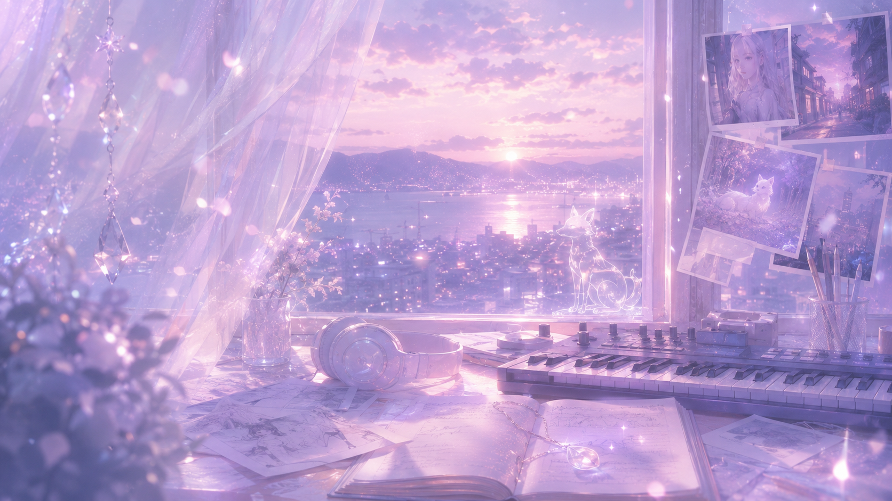
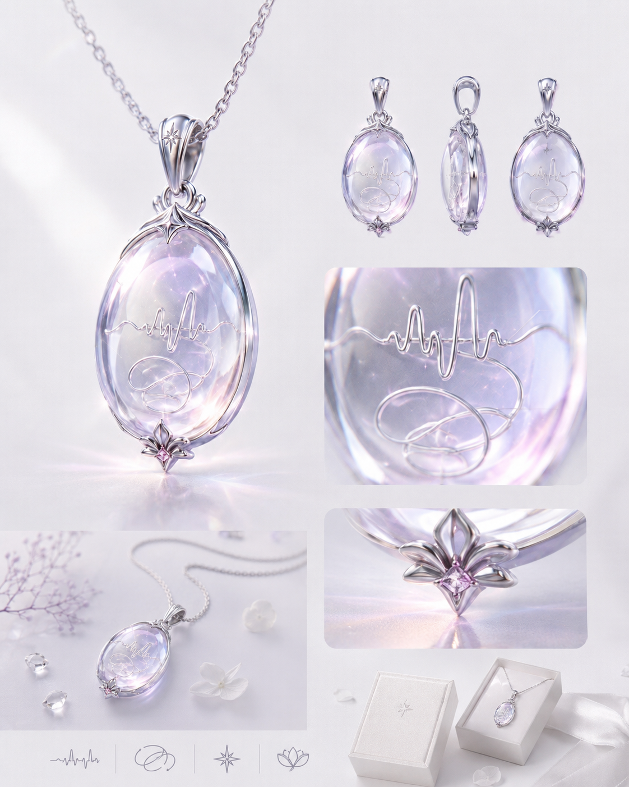
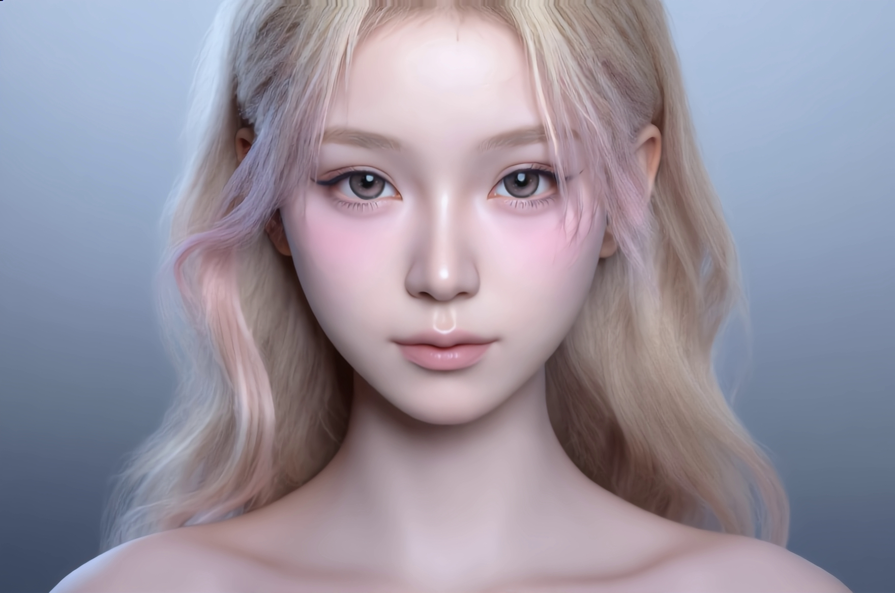
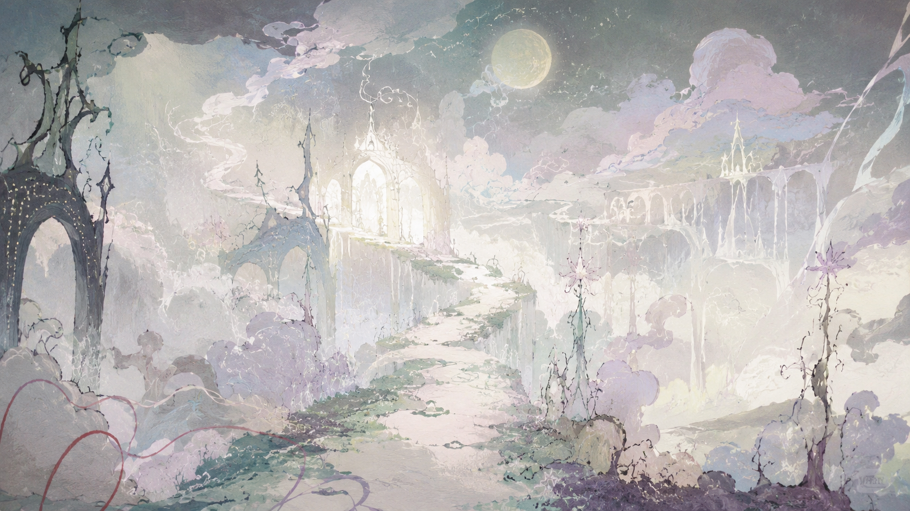

项目类型
原创数字音乐人 / AI 音乐影像 / 剧情音乐短片 / 虚拟歌手 IP
Project Overview
Dori 朵荔是一个原创女 Solo 数字音乐人企划。项目以音乐作品为核心，结合 AIGC 影像、角色 IP、剧情音乐短片与虚拟内容运营，尝试探索数字音乐人从角色设定、原创歌曲、视觉影像到平台传播的完整路径。

原创数字音乐人 / AI 音乐影像 / 剧情音乐短片 / 虚拟歌手 IP
原创企划人 / 音乐制作人 / 角色设定 / 世界观构建 / AIGC 影像统筹
原创歌曲 / AI MV / 剧情音乐短片 / 角色短视频 / 世界观视觉内容
角色设定 / 第一支剧情音乐短片构想 / Omera 世界观 / Echora 设定 / 音乐风格定位 / AIGC 制作流程规划 / 展示网站
Highlights
Dori 朵荔不是先有虚拟形象再补音乐，而是以声音、歌曲和情绪表达作为核心，围绕音乐内容建立角色、影像和世界观。
第一支剧情音乐短片《小狐狸不回信》会先让观众理解 Dori 的情绪来源、Omera 的入口、Echora 的出现和回响坠的诞生。世界观不是硬讲出来的，而是从 Dori 的第一段故事里自然长出来。
Omera 作为潜意识平行时空，天然适合通过 AIGC 影像呈现梦核空间、记忆残影、时间循环、情绪回声等画面。这让项目具备 AI MV、剧情音乐短片和角色短视频的多种表达可能。
成长、告别、遗憾、被遗忘的情绪，是年轻用户容易理解的主题。同时，回响坠作为 Dori 的核心信物，也具备发展成项链、挂件、钥匙扣、徽章等周边的可能。


Character
Dori 朵荔是一位原创女 Solo 数字音乐人。她既像现实中佛系而乐观的女大学生，也像虚拟舞台上拥有独特音乐世界与影像表达的歌者。
她佛系、乐观、细腻，习惯用轻松的方式面对生活。她的乐观并不是伪装，而是她真实的一部分。只是有些来不及处理的难过，会被她不知不觉地遗忘进潜意识深处，最终在 Omera 中留下回声。
Dori 朵荔拥有白金长发，发丝中带有淡粉色挑染，瞳色为柔和的粉棕色。她的整体穿搭偏韩系简约风，以干净、轻盈、自然的女 Solo 气质为主。她不是过度复杂的赛博偶像，也不是单纯甜美的少女形象。她的外表给人的第一感觉是温柔、精致、清透，但细看又有一点若有若无的疏离感和隐藏的疲惫感。
清透、甜美、带呼吸感的少女声线。情绪底色中有一点疲惫、破碎和自我保护。她的声音不是炫技型，而是更强调情绪氛围、旋律记忆点与角色表达。
Dori 佩戴着一枚透明、精致的 Echora Pendant / 回响坠。它是小狐狸留给她的信物，也是她听见他人情绪回声、再次进入 Omera 的媒介。
Story Entrance
从《小狐狸不回信》开始
《小狐狸不回信》是 Dori 朵荔的第一支剧情音乐短片，也是观众第一次理解 Omera 的入口。
小学毕业日，Dori 和一个重要的朋友约定，用纸杯传声筒说出最后一句只有彼此知道的悄悄话。但毕业日太混乱，她只听见断断续续的声音。那句告别没有真正抵达，也成为她后来遗忘进潜意识深处的一段遗憾。
多年后，Dori 反复梦见一只熟悉的小狐狸。小狐狸带她进入 Omera，让她重新靠近那段被遗忘的情绪。她逐渐发现，小狐狸不是那位朋友本人，而是那句没有抵达的告别在潜意识中留下的情绪残影。
当 Dori 终于承认自己曾经真的难过、真的想念对方，并听见传声筒里那句未说完的话时，那段情绪被看见、被理解、被安放。小狐狸也完成了自己的使命。
消失前，小狐狸将纸杯传声筒中的线凝成一枚小小的透明吊坠——Echora Pendant / 回响坠。
从此，Dori 不再只能听见自己的遗憾。她也能通过回响坠，听见他人潜意识深处的 Echora 情绪回声，继续进入 Omera，走向新的音乐故事。
每一段 Echora 都可能来自一个没有说出口的告白、一次没来得及道别的离开、一句被压回心里的道歉，或一个反复出现在梦里的瞬间。
Dori 会顺着这些情绪回声进入 Omera，让不同人的情绪被看见、理解和重新流动。
每一首歌，都可以对应一段被困住的情绪。每一次进入 Omera，都是一次新的倾听。


Omera
Omera：潜意识构成的平行时空
Omera 不是梦境，也不是一种感觉。
它是一个真实存在于故事中的平行时空，由潜意识、未完成的告别、未说出口的话和被遗忘的情绪共同构成。梦只是进入 Omera 的入口，而不是 Omera 本身。
在 Omera 中，情绪不会凭空消失。那些没有被说出口、没有被理解、没有被好好告别的情绪，会以空间、声音、物品、人物残影和时间循环的形式留下来。
对于 Dori 来说，Omera 不是逃避现实的地方，而是她重新看见情绪、理解记忆、安放遗憾的地方。
这一页只解释 Omera 的基本性质。具体的 Echora、回响坠和循环机制，会在后面的原创设定中展开。

Original Settings
Omera 是由潜意识构成的平行时空。它承载着人们没有说出口的话、没有完成的告别和被遗忘的情绪。Dori 通过梦进入 Omera，但 Omera 本身不是梦。
Echora 是 Omera 中残留的“情绪回声”。它不是普通声音，而是一段未完成情绪留下的残响。有时它像断续的话语，有时像旋律、杂音、童年的声音，或某个反复出现的梦境片段。它代表那些没有被听见、没有被说完、没有被好好安放的情绪。
回响坠是小狐狸留给 Dori 的核心信物。它由童年纸杯传声筒中那条“没有抵达的线”在 Omera 中凝缩而成，外形是一枚小小的透明吊坠。吊坠内部有一圈极细的银色声波线，像纸杯电话的线被封存在玻璃里，也像一段还没有结束的回声。它不是普通饰品，而是连接 Dori 与 Omera 的媒介。通过回响坠，Dori 能听见他人潜意识深处的 Echora，也因此被引向新的情绪故事。
在 Omera 中，某些未被看见的情绪会形成循环。一个场景、一句话、一次错过、一次告别，可能反复发生。循环不会因为时间流逝自动结束。只有当那段情绪被看见、理解和安放，它才会停止。这一机制可以用于 Dori 的剧情音乐短片，让每一支歌曲都对应一段被困住的情绪。
Music Identity
Dori 的声音与音乐方向
Dori 的音乐不是单纯配乐，而是角色表达的一部分。她的歌曲承担着“让情绪被听见”的功能，连接角色故事、影像叙事与用户共鸣。
Dori 的歌曲希望兼具流行性与角色感。既要有容易记住的旋律与 hook，也要能让听众感受到她背后的故事、情绪和世界观。

Dori Demo
Art Direction
真实世界被梦境轻轻覆盖一层滤镜。少女日常、旧 DV 记忆、发光小狐狸、手写涂鸦、玻璃吊坠和情绪回声共同构成 Dori 的视觉语言。

角色视觉Dori 的角色视觉以白金长发、淡粉色挑染、粉棕瞳色和韩系简约穿搭为核心。整体气质干净、轻盈、清透，有女 Solo 数字音乐人的自然感，也保留一点梦境般的疏离感。
 真实梦核
真实梦核
Dori 的主视觉不应是普通写真，而应像青春电影或 MV 中被截取下来的一帧。黄昏街道、窗边逆光、学校走廊、旧 DV 颗粒、低饱和晚霞、虹彩光斑和轻微失焦，共同构成她的现实底色。
记忆残响
小狐狸不是实体宠物，而是情绪残响。它可以表现为远处发光的白影、墙面上淡淡的狐狸线条、记忆碎片中的轮廓，或现实与 Omera 交界处一闪而过的光。

Omera 空间Omera 是潜意识平行时空，因此画面不应像普通奇幻世界。它更接近梦核空间、记忆废墟、月光花园、潜意识海岸、循环走廊和星光通道。
回响坠是一枚小巧、透明、精致的吊坠。它的内部封存着一圈极细的银色声波线，像纸杯电话的线，也像一段凝固的回声。
 材质与色彩
材质与色彩
玻璃、雾气、粒子、柔光、轻微故障感、低饱和梦境滤镜。色彩以粉白、银蓝、灰紫、浅金、透明感为主。整体视觉保持梦幻、轻盈、少女感和音乐影像感。
AIGC Workflow
本项目希望以“音乐创作 + AIGC 影像 + 虚拟 IP 运营”的方式推进，不只是完成单一视频，而是建立一个可持续生产的数字音乐人内容流程。
Concept Trailer
这一部分用于展示 Dori 朵荔的剧情音乐短片概念预告、AI MV 片段或未来发布的视频内容。
计划中的第一支概念预告将围绕《小狐狸不回信》展开，呈现纸杯传声筒、小狐狸、Omera 入口、Echora 情绪回声与回响坠诞生的关键画面。
Roadmap
完成 Dori 角色视觉、回响坠道具设计、60 秒音乐 Demo、30 秒剧情音乐短片概念预告，初步验证角色、音乐、Omera 视觉和 Echora 设定是否成立。
发布 AI MV 片段、角色短视频、世界观切片和回响坠视觉内容，观察用户对 Dori 视觉、声音、故事设定和情绪主题的反馈。
尝试原创歌曲发行、虚拟 IP 账号运营、平台内容增长、周边概念测试与商业合作可能性，让 Dori 从单个项目逐渐发展为持续更新的数字音乐人企划。
Collaboration
希望进一步完善角色一致性、Omera 空间视觉、Echora 视觉化、回响坠道具设计、AI MV 片段和剧情音乐短片制作流程。
希望获得原创歌曲发行、版权管理、平台分发与合规方面的支持。
希望进一步明确账号定位、内容节奏、粉丝互动方式和平台增长策略。
希望探索数字音乐人项目在音乐发行、短视频内容、角色周边、品牌合作、虚拟演出或跨媒介内容中的发展可能。
Value
Dori 朵荔不只是一个虚拟歌手形象，而是一个以音乐为核心、以 AIGC 影像为表达方式、以成长、告别与情绪共鸣为内容驱动的原创数字音乐人企划。
她具备持续推出原创歌曲、剧情音乐短片、角色短视频和世界观视觉内容的延展潜力。
Omera 作为潜意识平行时空，Echora 作为情绪回声设定，回响坠作为连接现实与 Omera 的核心信物，为 Dori 后续的音乐影像内容和周边开发提供了持续扩展的叙事基础。
让被遗忘的情绪，在声音与影像中重新被看见。